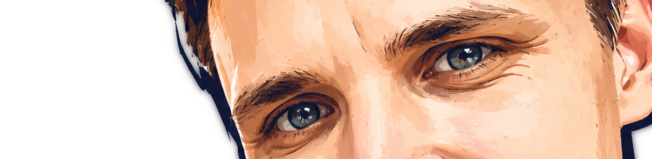
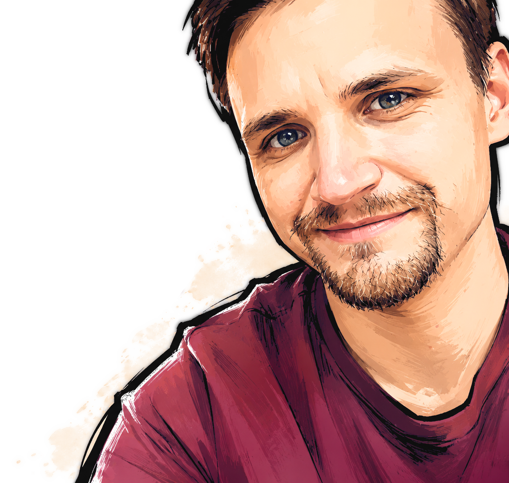

Custom web a PWA aplikácie
Postavím presne to, čo váš biznis potrebuje. Žiadne preplácané šablóny – moderný stack, čistý kód, výsledok ktorý reálne zarába.


Coder · AI Engineer · Sieťar · Audio \ Video Producer
12+ rokov staviam to, čo iní outsourcujú trom dodávateľom. Weby, apky, streamy a siete – z jednej ruky, s mojou sieťou ľudí a AI agentmi za chrbtom.
Väčšina ľudí si vyberie jednu špecializáciu a žije z nej. Ja som zostal v troch – preto viem, kde sa pretínajú. Koho z mojej siete preverených freelancerov zavolať, kde nasadiť AI agenta a čo si vziať na seba. Je jedno, kto to pre vás spraví – ak budete spokojný s výsledkom.
JavaScript, TypeScript · PHP, Python, Bash · REST, JSON · SQL · Linux servery · MikroTik a Ubiquiti deployments · Git, CI/CD · …
Stack je dnes druhotný. Treba rozumieť objektovému programovaniu, klásť správne otázky a držať sa E2E testov. Zvyšok dotiahne Claude Code.
Multi-cam produkcia · Live stream s low latency · FOH mixing a line array · DMX svetelná réžia · Color grading a post · Video mapping · Acoustic treatment · Stage design
Project management · B2B predaj a account management · Team leadership a coaching · Korporátna klientela · HR a PR · Social media marketing
Majú vás presvedčiť, že firma má klientov a teda vie, čo robí. Skutočná dôvera ale prichádza až s výsledkom – s tým, s ktorým budete konečne spokojný.
Pod každým nadpisom konkrétne služby z troch oblastí – web, audio/video, sieťová infraštruktúra. Otvor si tie, ktoré ťa zaujímajú.
Rýchle moderné weby a aplikácie. AI-first stack, Claude Code v pipeline – dodám za zlomok času starých štúdií.
Postavím presne to, čo váš biznis potrebuje. Žiadne preplácané šablóny – moderný stack, čistý kód, výsledok ktorý reálne zarába.
Nájdu vás ľudia aj AI. ChatGPT, Perplexity, Google – štruktúrované dáta, schema.org, sémantické HTML. Viac viditeľnosti, viac zákazníkov.
Pracujem s Claude Code agentami a ďalšími AI nástrojmi, ale kód mám plne pod kontrolou. Cez code review neprejde ani jeden mŕtvy riadok – každý PR čítam, každú zmenu rozumiem, na každý prípad mám E2E testy. AI mi zrýchľuje rutinu, ale nenahrádza môj úsudok. Vývoj 5× rýchlejší, rovnaká kvalita, žiadne kompromisy.
UX/UI postavené na konverziách, nie na fotenia do portfólia. Funguje na mobile aj desktop, načíta sa rýchlo, ľudia kupujú.
Edge hosting, CDN, CI/CD. Stačí git push – stránka beží naživo za pár sekúnd. O techniku sa starám ja.
Texty, fotky, ceny si upravujete sami. Žiadny programátor pri každej zmene – len kliknete a uložíte.
Multi-cam video, live stream, FOH sound. Akcia ktorá vyzerá ako od top štúdia.
3+ kamery, live mix, color grading. Konferencie, promo, firemné akcie – výstup, ktorý sa nehanbí stáť na YouTube vedľa veľkých značiek.
Vysielanie na YouTube, Twitch, vlastné platformy. Stabilný stream, profi grafika, low latency. Publikum vás vidí ako keby bolo v sále.
Ozvučenie konferencií, koncertov, podujatí. Digital mixing, line array, čisté monitory. Každý hlas a každý nástroj presne tak, ako má znieť.
DMX programované osvetlenie – od jemnej atmosféry po festivalovú šou. Atmosféra, ktorá zmení vnímanie celej akcie.
Návrh a inštalácia akustických prvkov pre kancelárie, podcast štúdiá, eventové priestory. Žiadna ozvena, čistý zvuk, profesionálny dojem.
Sám to tu nerobím. Ale roky som obklopený ľuďmi, ktorí to robia denne – a viem koho na čo zavolať. Jeden kontakt, jedna zodpovednosť.
MikroTik a Ubiquiti konfigurátori, Linux administrátori, bezpečnostní špecialisti – mám ich roky vyskúšaných. Vy potrebujete jedného človeka, ja zoženiem správneho.
Komunikujete so mnou, nie s piatimi dodávateľmi. Preložím požiadavky, koordinujem ľudí, držím deadliny a rozpočet. Vy si neriešite koho a kedy volať.
Každý partner si u mňa odrobil referencie. Nepošlem k vám niekoho, koho by som si nezavolal sám. Keď niečo dodám, ručím za to svojou značkou.
Rozumiem obom stranám – ako vývojár viem, čo backend potrebuje od siete; ako koordinátor viem, čo siete dokážu. Tu sa veci najčastejšie lámu, ja viem kde.
Aj keď infru rieši partner, sám si pozriem návrh – či dáva zmysel, či nie je over/under-engineered, či sedí s tým, čo aplikácia naozaj potrebuje. Žiadne riešenia „len aby bolo".
Pravidelné bezpečnostné kontroly, penetračné testy, audit infraštruktúry – realizujú špecialisti, koordinujem ja. Útoky sú dnes denný štandard, váš tím má byť pripravený.
Lacný dodávateľ je najčastejšie najdrahší – zaplatíte ho dvakrát. Raz jemu, druhýkrát tomu, kto to po ňom opravuje. Prečo to nespraviť raz a poriadne? Šetrí to váš čas.
Za 12+ rokov som videl rovnaké chyby v stovkách projektov. Web, ktorý sa po roku nedá rozšíriť. Stream, ktorý padne uprostred prenosu. Sieť postavená podľa návodu z YouTube. Opravovať to potom stojí násobne viac, ako keby to bolo hneď spravené poriadne.
Platíte si skúsenosti, nie hodiny. Rozhodnutia, ktoré som spravil stokrát predtým. To, že viem, kde sa to pokazí – ešte pred tým, než sa to začne stavať.
Šikovní freelanceri za 15 €/h existujú – niektorých vám viem aj odporučiť, keďže sú projekty, kde to dáva zmysel. Ale keď chcete spať pokojne, neriešiť problémy s dodaním a mať istotu, že to dobre dobehne – tak to je dôvod, prečo si pýtam viac.
Cenu poviem dopredu. Bez „plus-mínus podľa situácie“, bez dodatočných hodín na konci projektu. Riziká odhadu nesiem ja, nie vy.
Nepatrím medzi najlacnejších. Patrím medzi tých, čo prácu dokončia bez korektúr a pred deadlinom. Ktoré z toho je pre vás dôležitejšie, si vyberáte vy.